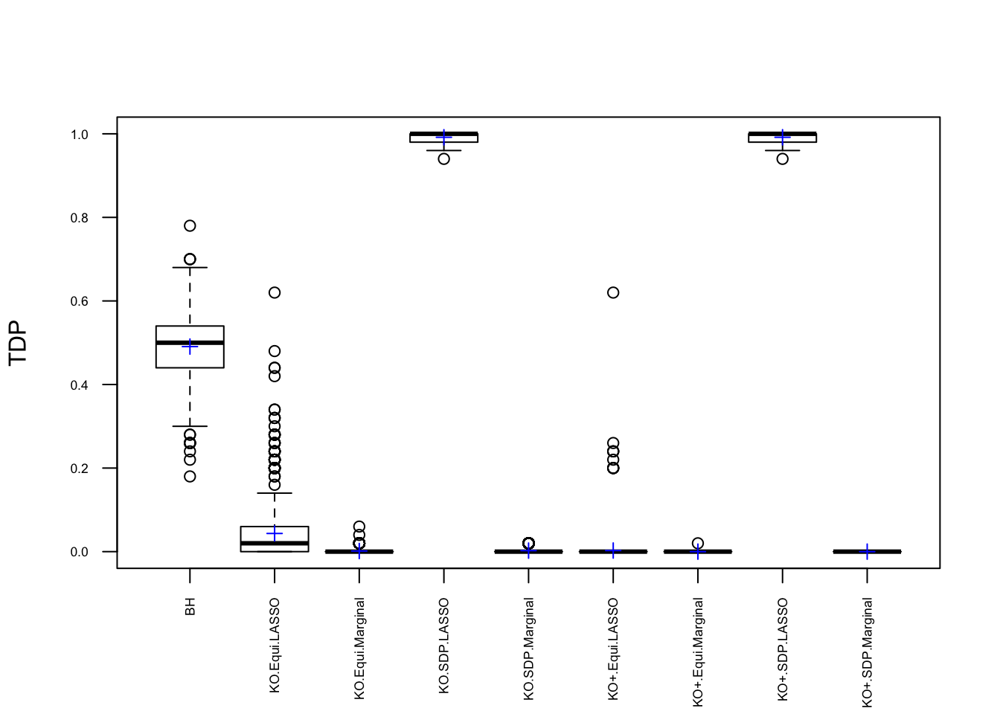

KnockoffLast updated: 2018-05-12
workflowr checks: (Click a bullet for more information) ✔ R Markdown file: up-to-date
Great! Since the R Markdown file has been committed to the Git repository, you know the exact version of the code that produced these results.
✔ Environment: empty
Great job! The global environment was empty. Objects defined in the global environment can affect the analysis in your R Markdown file in unknown ways. For reproduciblity it’s best to always run the code in an empty environment.
✔ Seed:
set.seed(12345)
The command set.seed(12345) was run prior to running the code in the R Markdown file. Setting a seed ensures that any results that rely on randomness, e.g. subsampling or permutations, are reproducible.
✔ Session information: recorded
Great job! Recording the operating system, R version, and package versions is critical for reproducibility.
✔ Repository version: ddf9062
wflow_publish or wflow_git_commit). workflowr only checks the R Markdown file, but you know if there are other scripts or data files that it depends on. Below is the status of the Git repository when the results were generated:
Ignored files:
Ignored: .DS_Store
Ignored: .Rhistory
Ignored: .Rproj.user/
Ignored: analysis/.DS_Store
Ignored: analysis/BH_robustness_cache/
Ignored: analysis/FDR_Null_cache/
Ignored: analysis/FDR_null_betahat_cache/
Ignored: analysis/Rmosek_cache/
Ignored: analysis/StepDown_cache/
Ignored: analysis/alternative2_cache/
Ignored: analysis/alternative_cache/
Ignored: analysis/ash_gd_cache/
Ignored: analysis/average_cor_gtex_2_cache/
Ignored: analysis/average_cor_gtex_cache/
Ignored: analysis/brca_cache/
Ignored: analysis/cash_deconv_cache/
Ignored: analysis/cash_fdr_1_cache/
Ignored: analysis/cash_fdr_2_cache/
Ignored: analysis/cash_fdr_3_cache/
Ignored: analysis/cash_fdr_4_cache/
Ignored: analysis/cash_fdr_5_cache/
Ignored: analysis/cash_fdr_6_cache/
Ignored: analysis/cash_plots_cache/
Ignored: analysis/cash_sim_1_cache/
Ignored: analysis/cash_sim_2_cache/
Ignored: analysis/cash_sim_3_cache/
Ignored: analysis/cash_sim_4_cache/
Ignored: analysis/cash_sim_5_cache/
Ignored: analysis/cash_sim_6_cache/
Ignored: analysis/cash_sim_7_cache/
Ignored: analysis/correlated_z_2_cache/
Ignored: analysis/correlated_z_3_cache/
Ignored: analysis/correlated_z_cache/
Ignored: analysis/create_null_cache/
Ignored: analysis/cutoff_null_cache/
Ignored: analysis/design_matrix_2_cache/
Ignored: analysis/design_matrix_cache/
Ignored: analysis/diagnostic_ash_cache/
Ignored: analysis/diagnostic_correlated_z_2_cache/
Ignored: analysis/diagnostic_correlated_z_3_cache/
Ignored: analysis/diagnostic_correlated_z_cache/
Ignored: analysis/diagnostic_plot_2_cache/
Ignored: analysis/diagnostic_plot_cache/
Ignored: analysis/efron_leukemia_cache/
Ignored: analysis/fitting_normal_cache/
Ignored: analysis/gaussian_derivatives_2_cache/
Ignored: analysis/gaussian_derivatives_3_cache/
Ignored: analysis/gaussian_derivatives_4_cache/
Ignored: analysis/gaussian_derivatives_5_cache/
Ignored: analysis/gaussian_derivatives_cache/
Ignored: analysis/gd-ash_cache/
Ignored: analysis/gd_delta_cache/
Ignored: analysis/gd_lik_2_cache/
Ignored: analysis/gd_lik_cache/
Ignored: analysis/gd_w_cache/
Ignored: analysis/knockoff_10_cache/
Ignored: analysis/knockoff_2_cache/
Ignored: analysis/knockoff_3_cache/
Ignored: analysis/knockoff_4_cache/
Ignored: analysis/knockoff_5_cache/
Ignored: analysis/knockoff_6_cache/
Ignored: analysis/knockoff_7_cache/
Ignored: analysis/knockoff_8_cache/
Ignored: analysis/knockoff_9_cache/
Ignored: analysis/knockoff_cache/
Ignored: analysis/knockoff_var_cache/
Ignored: analysis/marginal_z_alternative_cache/
Ignored: analysis/marginal_z_cache/
Ignored: analysis/mosek_reg_2_cache/
Ignored: analysis/mosek_reg_4_cache/
Ignored: analysis/mosek_reg_5_cache/
Ignored: analysis/mosek_reg_6_cache/
Ignored: analysis/mosek_reg_cache/
Ignored: analysis/pihat0_null_cache/
Ignored: analysis/plot_diagnostic_cache/
Ignored: analysis/poster_obayes17_cache/
Ignored: analysis/real_data_simulation_2_cache/
Ignored: analysis/real_data_simulation_3_cache/
Ignored: analysis/real_data_simulation_4_cache/
Ignored: analysis/real_data_simulation_5_cache/
Ignored: analysis/real_data_simulation_cache/
Ignored: analysis/rmosek_primal_dual_2_cache/
Ignored: analysis/rmosek_primal_dual_cache/
Ignored: analysis/seqgendiff_cache/
Ignored: analysis/simulated_correlated_null_2_cache/
Ignored: analysis/simulated_correlated_null_3_cache/
Ignored: analysis/simulated_correlated_null_cache/
Ignored: analysis/simulation_real_se_2_cache/
Ignored: analysis/simulation_real_se_cache/
Ignored: analysis/smemo_2_cache/
Ignored: data/LSI/
Ignored: docs/.DS_Store
Ignored: docs/figure/.DS_Store
Ignored: output/fig/
Unstaged changes:
Deleted: analysis/cash_plots_fdp.Rmd
| File | Version | Author | Date | Message |
|---|---|---|---|---|
| rmd | cc0ab83 | Lei Sun | 2018-05-11 | update |
| html | 4b179a9 | LSun | 2018-04-05 | Build site. |
| rmd | 20ea328 | LSun | 2018-04-05 | wflow_publish(c(“analysis/knockoff_7.rmd”, “analysis/knockoff_8.rmd”, |
| html | f4c819a | LSun | 2018-03-01 | Build site. |
| rmd | ed7a1a0 | LSun | 2018-03-01 | wflow_publish(“knockoff_7.rmd”) |
| rmd | b2e3718 | Lei Sun | 2018-02-28 | randomization |
| html | 1d0f7e0 | LSun | 2018-02-28 | Build site. |
| rmd | 4eaee81 | LSun | 2018-02-28 | wflow_publish(“knockoff_7.rmd”) |
| html | c9714a8 | LSun | 2018-02-23 | Build site. |
| rmd | 4b4505a | LSun | 2018-02-23 | wflow_publish(c(“knockoff_7.rmd”, “index.rmd”)) |
| html | 3b0b20d | LSun | 2018-02-23 | Build site. |
| rmd | 2f0b137 | LSun | 2018-02-23 | wflow_publish(“knockoff_7.rmd”) |
| html | 3fcf815 | LSun | 2018-02-23 | Build site. |
| rmd | ef61de6 | Lei Sun | 2018-02-21 | knockoff |
| rmd | 18479f8 | LSun | 2018-02-21 | knockoff |
Knockoff has 3 steps.
Generate knockoff variables, which keep the same correlation structure as original variables but has no effect on the response.
Generate test statistics such that these statistics tend to be large positive number for non-null variables but iid positive or negative for null variables.
Find a cutoff threshold for those test statistics to control the estimated FDR under \(q\).
The default knockoff::knockoff.filter function uses SDP construction in step 1 and LASSO-related statistics in step 2. However, we’ve found that Knockoff coded in this way failed to control FDR in simulations when variables are generated such that \(\hat\beta\) has heavy average absolute pairwise correlation, which seems to contradict Theorem 2 in the Knockoff paper. Now we take a closer look to see what went wrong.
In step 1, we use two construction methods: equi and sdp. sdp is believed to be more powerful. In step 2, we use two statistics: marginal and lasso-related. lasso-related is believed to be more powerful.
n <- 3e3
p <- 1e3
k <- 50
d <- 7
q <- 0.1| Version | Author | Date |
|---|---|---|
| 3fcf815 | LSun | 2018-02-23 |
| Version | Author | Date |
|---|---|---|
| 3fcf815 | LSun | 2018-02-23 |
| Version | Author | Date |
|---|---|---|
| 3b0b20d | LSun | 2018-02-23 |
| Version | Author | Date |
|---|---|---|
| 1d0f7e0 | LSun | 2018-02-28 |
| 3fcf815 | LSun | 2018-02-23 |

A set of well-bahaving Knockoff variables \(X^k\) should have the property that \[
\begin{array}{c}
cor(X^k_i, X^k_j) = cor(X_i, X_j)\\
cor(X_i, X^k_j) = cor(X_i, X_j)
\end{array}
\] while \(cor(X_i, X^k_i)\) should be as small as possible. It turns out it’s just not that easy to generate these well-behaving Knockoff variables when columns in \(X\) are correlated in a certain way. Especially when using SDP optimization, it could generate a lot of knockoffs that are exactly the same as the originals.
| Version | Author | Date |
|---|---|---|
| f4c819a | LSun | 2018-03-01 |
If an original variable and its knockoff are too similar, it essentially makes little difference which one is included in the model, from a goodness of fit point of view.
The problem becomes more severe when we fit models like LASSO using methods like coordinate descent. The result depends in large part on the sequence of variables getting into the model. So if we feed LASSO with cbind(X, Xk), for every iteration, it’s always X[j] being optimized before Xk[j]. That’s a major reason we see asymmetric test statistics as above, and why Knockoff loses FDR control in these circumstances.
One way to fix that is to randomize the order of variables in cbind(X, Xk) before feeding them to LASSO. The following is a simulation.
| Version | Author | Date |
|---|---|---|
| f4c819a | LSun | 2018-03-01 |
| Version | Author | Date |
|---|---|---|
| f4c819a | LSun | 2018-03-01 |
| Version | Author | Date |
|---|---|---|
| f4c819a | LSun | 2018-03-01 |
After column randomization, the test statistcs for null variables are back to normal and Knockoff controls FDR again. The low power is another issue.
sessionInfo()R version 3.4.3 (2017-11-30)
Platform: x86_64-apple-darwin15.6.0 (64-bit)
Running under: macOS High Sierra 10.13.4
Matrix products: default
BLAS: /Library/Frameworks/R.framework/Versions/3.4/Resources/lib/libRblas.0.dylib
LAPACK: /Library/Frameworks/R.framework/Versions/3.4/Resources/lib/libRlapack.dylib
locale:
[1] en_US.UTF-8/en_US.UTF-8/en_US.UTF-8/C/en_US.UTF-8/en_US.UTF-8
attached base packages:
[1] parallel stats graphics grDevices utils datasets methods
[8] base
other attached packages:
[1] lattice_0.20-35 doMC_1.3.5 iterators_1.0.9 foreach_1.4.4
[5] ggplot2_2.2.1 reshape2_1.4.3 knockoff_0.3.0
loaded via a namespace (and not attached):
[1] Rcpp_0.12.16 RSpectra_0.12-0 compiler_3.4.3
[4] pillar_1.0.1 git2r_0.21.0 plyr_1.8.4
[7] workflowr_1.0.1 R.methodsS3_1.7.1 R.utils_2.6.0
[10] tools_3.4.3 digest_0.6.15 evaluate_0.10.1
[13] tibble_1.4.1 gtable_0.2.0 rlang_0.1.6
[16] Matrix_1.2-12 yaml_2.1.18 stringr_1.3.0
[19] knitr_1.20 rprojroot_1.3-2 grid_3.4.3
[22] rmarkdown_1.9 Rdsdp_1.0.4-2 magrittr_1.5
[25] whisker_0.3-2 backports_1.1.2 scales_0.5.0
[28] codetools_0.2-15 htmltools_0.3.6 colorspace_1.3-2
[31] labeling_0.3 stringi_1.1.6 lazyeval_0.2.1
[34] munsell_0.4.3 R.oo_1.21.0
This reproducible R Markdown analysis was created with workflowr 1.0.1